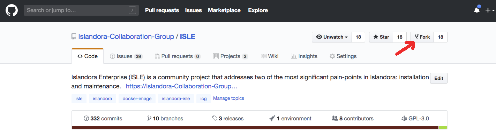
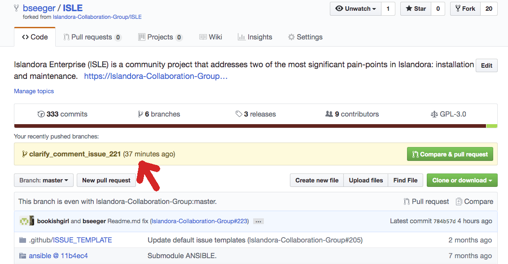
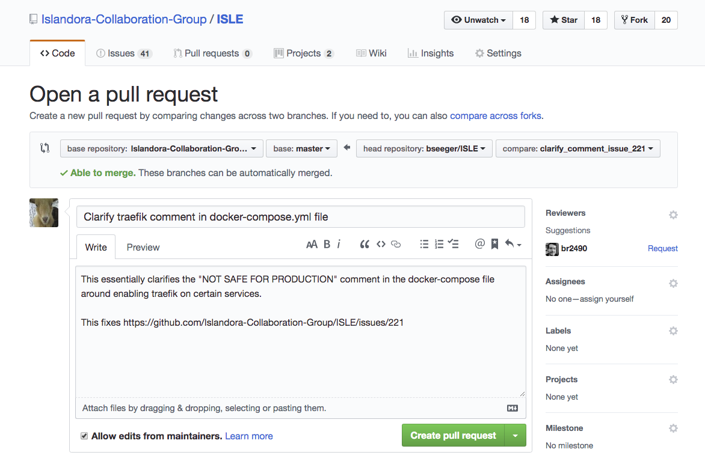

How to Submit Code/Documentation to the ISLE Project
The ISLE project uses git, GitHub and Pull Requests (PRs) as part of our development and documentation processes. To submit a PR, please use the process described below. PR’s that do not follow this process will not be accepted into the project.
Please keep PRs small, focused and frequent.
Prerequisites: You’ll need a Github.com account Git installed on your local development machine * CLA on file with ISLE
Steps to Setup your Forked ISLE Repository
Log into github.com and fork the ISLE repository into your github.com account. Navigate to https://github.com/Islandora-Collaboration-Group/ISLE and then click the “Fork” box (upper right corner of screen) to make a copy of this repo in your own github.com account that you can then clone down to your local development environment:

Next open a terminal:
$ git clone https://github.com/your-user-name/ISLE.git
You will now have a local copy of the ISLE project.
Got into the ISLE projects directory:
$ cd ISLE
Create a link back to the main ISLE code base by adding a remote reference:
$ git remote add upstream https://github.com/Islandora-Collaboration-Group/ISLE.git
Your setup should now look like this:
$ git remote -v
origin https://github.com/your-user-name/ISLE.git (fetch)
origin https://github.com/your-user-name/ISLE.git (push)
upstream https://github.com/Islandora-Collaboration-Group/ISLE.git (fetch)
upstream https://github.com/Islandora-Collaboration-Group/ISLE.git (push)
‘origin’ and ‘upstream’ are arbitrary, but common names. They can be anything you want. For this document, ‘origin’ will mean your forked repository and ‘upstream’ will be the main ISLE repository. It’s good to create a consistent paradigm for yourself when working with these names.
Now you’re ready to collaborate on the project!
Staying Up to Date
It’s always good to make sure you’re forked repository is up to date with the main ISLE repository. If you just set up your repository (via the fork and clone directions above) your repository will already be up to date and you don’t need to do this. When you’ve had a local repository setup and haven’t worked in it for a while, then it’s good to follow these instructions below to make sure you have the latest changes before you start your work.
First, make sure you’re on your master branch in your fork:
$ git checkout master
$ git status
# On branch master
nothing to commit (working directory clean)
Ensure that your git remote information is setup correctly:
$ git remote -v
origin https://github.com/your-user-name/ISLE.git (fetch)
origin https://github.com/your-user-name/ISLE.git (push)
upstream https://github.com/Islandora-Collaboration-Group/ISLE.git (fetch)
upstream https://github.com/Islandora-Collaboration-Group/ISLE.git (push)
It never hurts to double check that information.
Now do this to get any recent updates to the main ISLE repository:
$ git pull upstream master
Your local repository is now in sync with the main (remote) ISLE one. Push that up to your GitHub fork:
$ git push origin master
Enumerating objects: 40, done.
Counting objects: 100% (40/40), done.
Delta compression using up to 4 threads
Compressing objects: 100% (35/35), done.
Writing objects: 100% (37/37), 10.65 KiB | 5.33 MiB/s, done.
Total 37 (delta 19), reused 0 (delta 0)
remote: Resolving deltas: 100% (19/19), completed with 3 local objects.
To https://github.com/your-user-name/ISLE.git
afe1a83..48ade81 master -> master
Now your fork is up to date with any changes in the main ISLE repository. If you
look at the git log for your repository, or up on github.com, you’ll see that
your forked repository commit log information is inline with the main ISLE repository.
Submitting Code
First make sure your up to date by going through Staying Up to Date section above.
For many reasons it’s good practice to fix issues and add features on a branch within your repository.
In your forked repository, you can create and switch to a new branch with this command:
$ git checkout -b issue_1234_fix
Switched to a new branch issue_1234_fix
That created the branch and checked you out into it, which you can verify through a git status:
$ git status
On branch issue_1234_fix
nothing to commit, working tree clean
Complete your work on the branch and when done, add it to your fork on github.
If you are working on a change to an ISLE docker container, please read the
Changing a Docker Container section below on additional steps to do when
submitting a PR.
To do this, first commit your changes on that branch:
$ git add git add docker-compose.yml
$ git commit -m "Putting mysql logs into a volume to avoid issues with permissions and the container crashing”
If you do not include -m you will be taken into a text editor where you can craft a message there. Simply write your message, save and then exit in the editor. That will commit the change.
Please make sure the message in the commit is clear and descriptive about the change. `This makes it easier for understandability into the future. Your work is now committed locally.
Document your work by editing the appropriate .md files in the /docs directory. If the new code changes how ISLE is installed or managed, you must include updates to the documentation to ensure it continues to be accurate. This includes updating dependencies, version number changes, etc. Once the documentation files are updated, commit them to the branch in their own commit, rather than with the code changes:
$ git add docs/migrate/install-migration.md
$ git commit -m “Updated instructions for editing .env file”
If your changes do not require any updates to documentation, please indicate so in the comment when you submit your PR request (below).
The next step is to make sure your branch is up to date with any changes that happened while you were making your changes.
$ git checkout master
Switched to the 'master' branch
Next, pull any new updates from upstream/master and merge onto your local master
branch. This helps avoid/resolve conflicts when you create your Pull Request.
$ git pull upstream master
From https://github.com/Islandora-Collaboration-Group/ISLE
* branch master -> FETCH_HEAD
Already up to date.
$ git push origin master
Now switch to your branch that contains your work:
$ git checkout issue_1234_fix
Switched to branch 'issue_1234_fix'
Bring any changes to the master branch into your branch:
$ git rebase origin/master
First, rewinding head to replay your work on top of it...
Fast-forwarded master to upstream/master.
Rebase, like pull, is another way to integrate changes from one branch to another. Rebasing is a common way to integrate upstream changes into your local repository. Rebasing is like saying, “I want to base my changes on what everybody has already done.” A Git rebase will take the work on the branch you specify and apply them over the branch you're currently checked out on. So the above command will take what's new on origin/master and bring that into your currently checked out branch (origin/issue_1234_fix). This brings your branch up to date with anything new that happened on origin/master while you were making you're changes.
This is important because it helps resolve any conflicts that might have arisen while you were working on your changes. For example, if another person submitted a Pull Request that was accepted while you were working on your branch, this will bring in their changes to your branch. Then when you create your Pull Request for this branch, you are up to date with whatever changes happened in the upstream repository.
If two people make a change on the same piece of code or documentation it’s known as a conflict and this step will give you the opportunity to sort out the conflict.
Now you’re ready to push your local branch up to your fork of ISLE on github.com:
$ git push origin issue_1234_fix
In a browser, navigate to your fork of ISLE in github.com. Across the top it will ask if you want to make a PR on the main ISLE repository, based on your most recent changes. If you’re ready, then start the PR by clicking on “Compare & pull request”.

You’ll be taken to a screen that looks like this:

In the banner above, the “base repository” should be the repository you want the changes to end up in. In this case it’s: “Islandora-Collaboration-Group/ISLE” on branch “master”. The “head repository” should be your repository and branch information containing the new changes. Most of the time github fills this in correctly for you and you just need to double check it.
Also, it should say Able to merge, which means there are no conflicts between
your branch and the branch you are trying to merge your changes into. If it
doesn’t say that, then you’ll need to fix the conflicts on your branch before
creating the PR. See Staying Up to Date section above for how to get the
latest changes to see what the conflicts are.
The name and description in the PR will be initially populated from the text in your commit comment, so edit those fields as necessary to make sure someone can understand what this PR is about and what issue it’s fixing. Generally it’s good to add more information here about what you changed and a good way to test it, so whoever reviews it knows what to do.
When ready, click Create pull request.
From there, a committer will review your PR and ask questions or give feedback about it. If the feedback you get requests changes, you’ll need to make the updates on your branch (locally), then push them back up to your fork again - like above. You don’t need to re-submit the PR. Github will notice you changed the branch and will show those changes in the PR automatically.
Changing a Docker Container
One more tool you'll need if you're working with containers is an account on DockerHub.com. Accounts are free and you can signup for one here: https://hub.docker.com/signup.
If you're only making changes to the main ISLE repository, you do not need to do this.
While testing your change locally, you should have created a docker image of the new container. By making that container available via your own space on Dockerhub.com you'll enable whomever is testing the PR to use that image.
A docker push looks like this:
$ docker push your-user-name/isle-fedora:issue_23_fix
Please provide a link to the container location on Dockerhub.com in the PR. It will make testing of the PR both easier and quicker.